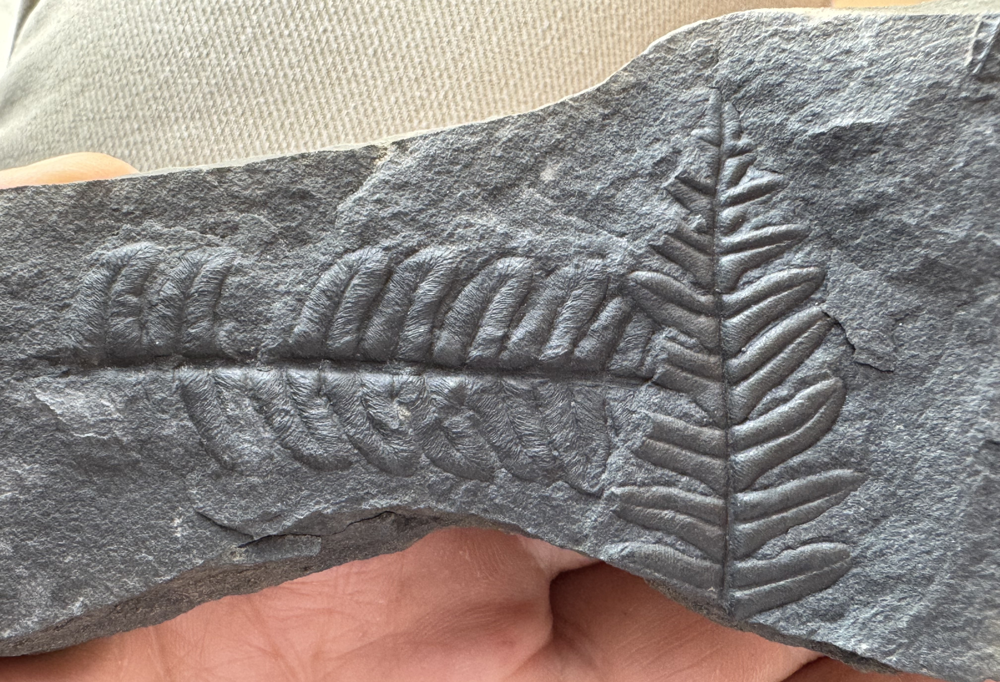
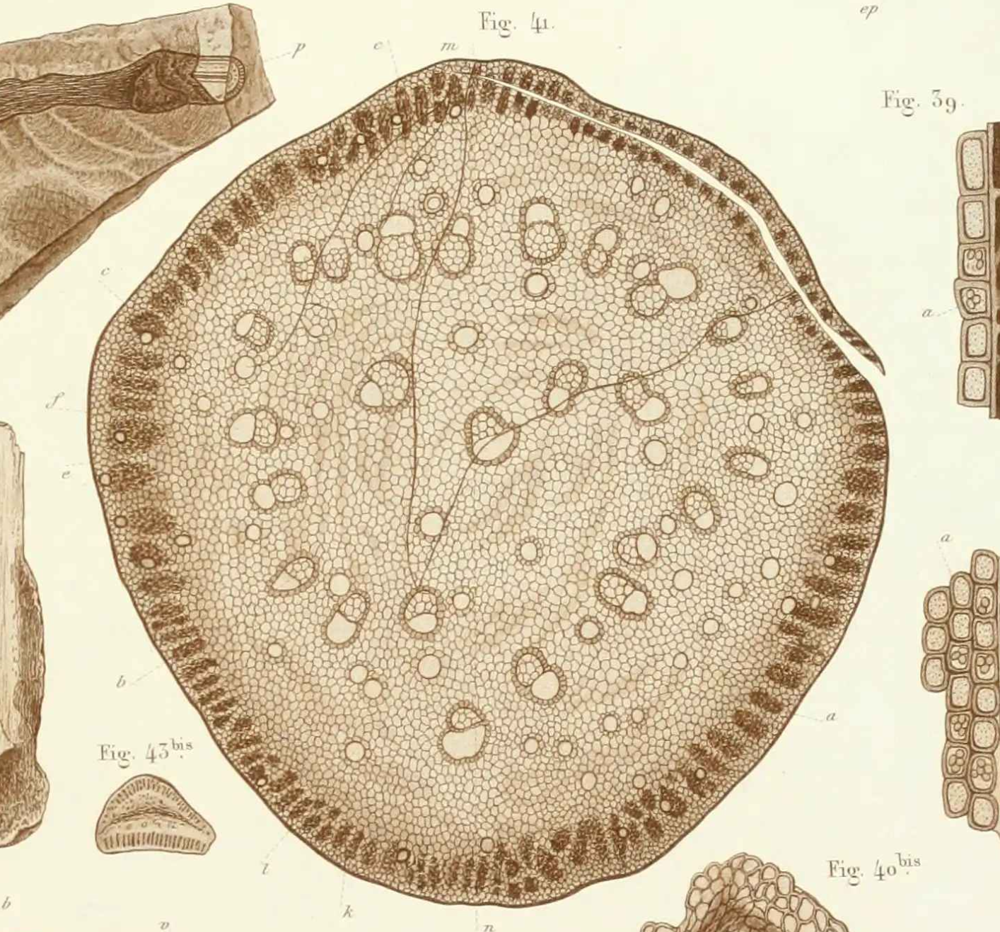
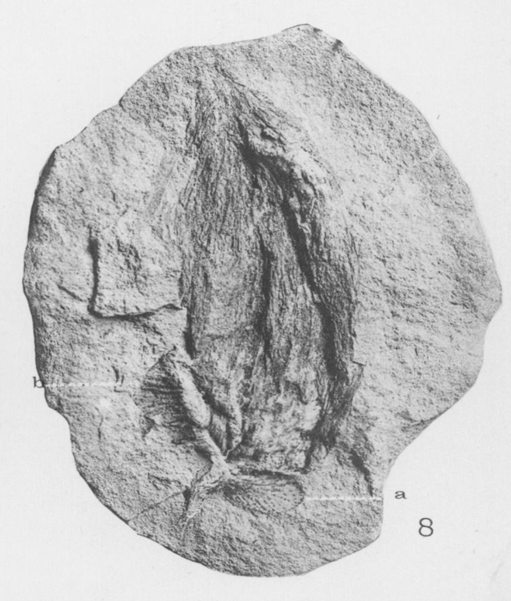
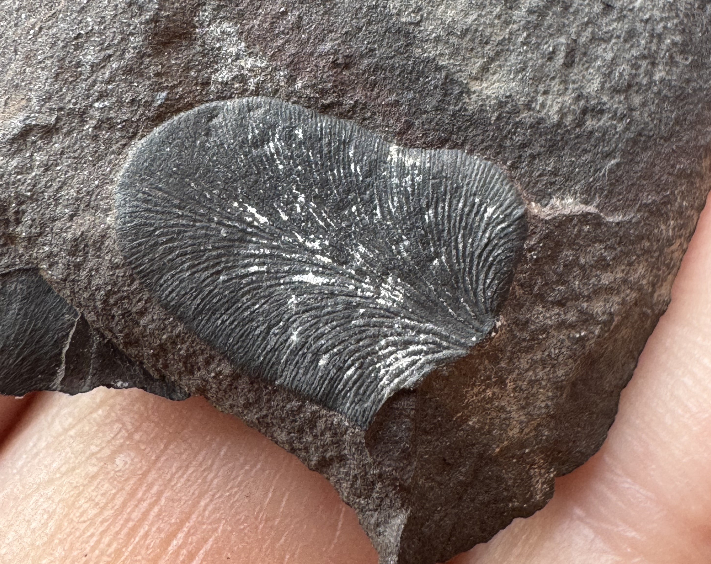

The seed ferns that aren't ferns
Summary: many of the most common fossil leaves found in Paleozoic rocks that look like ferns were actually produced by gymnosperms. They were seed-plants with fern-like foliage and there is nothing like them alive today. Even though paleobotanists are confident of this for several reasons, finding fossils where the ovules or seeds are directly attached to the same plant as the leaves is very rare.
Last weekend I spent a day collecting at a Pennsylvanian (Late Carboniferous) plant locality in northern Spain. The shale was full of fern-like foliage: Callipteridium, Alethopteris and Neuropteris. Then, just before we packed up, I split a slab and found a trigonocarpalean ovule.

All of these fossils almost certainly came from the same group of plants: the Medullosales. The foliage of these plants looks like fern foliage, but the plants made seeds. However, documenting this has been a challenge for over 100 years because the ovules are almost never found attached.
Paleobotanists have been collecting and naming fern-like foliage like Alethopteris and Neuropteris at least since Kaspar Maria von Sternberg and Adolphe Brongniart in the early 1800s. These leaves are among the most common fossils in Pennsylvanian fossil assemblages, and for most of the 19th century, almost everyone treated them as ferns. The problem was that Alethopteris, Neuropteris, and similar genera never had sporangia, even though true ferns with fertile parts were common in the same assemblages. Dionýs Stur articulated this problem in 1883; he noted that fertile specimens of Neuropteris had never been found, but the foliage was everywhere and if they were ferns surely sporangia would have been found.
The hypothesis that these might actually be seed plants was initially based on anatomy of the stems and petioles, rather than seeds or pollen organs. In 1876, Bernard Renault described the anatomy of the petioles in detail and named them Myelopteris, and Cyrille Grand'Eury (1877) linked them to Neuropteris, Odontopteris, and similar foliage. At the time, Renault still placed these plants among the ferns, close to the Marattiaceae, but Grand'Eury thought that small striate seeds found with Neuropteris flexuosa in the Gard in France were produced by that species, and that Linopteris bore seeds as well.
Later, Otto Weber and Johann Sterzel (1896) showed Myelopteris-type petiole bases still attached to Medullosa stems from the Permian of Chemnitz, Germany. Medullosa stems were strange. Their vascular tissue was split into several strands, each wrapped in its own wood. Wood, it turns out, has evolved several times in different groups of plants, but not in ferns. The wood of Medullosa seemed to be a version of the type of wood found in seed plants.
Henry Potonié (1897) introduced the name Cycadofilices ("cycad-ferns") for plants that seemed intermediate between cycads and ferns. In 1899, he included Medullosa, Lyginopteris, Heterangium, Protopitys and Noeggerathia. But Potonié's scheme shows how stubborn the problem was. He moved the stems into Cycadofilices, but he still classified the leaves as ferns. Alethopteris, Callipteridium, Callipteris, Odontopteris, Mariopteris and Lonchopteris stayed with the pecopterid ferns. Neuropteris, Neurodontopteris, Neuralethopteris and Linopteris stayed with the neuropterid ferns.
Dispersed ovules/seeds were common in the same beds. Ovules identified as Trigonocarpus had been known and named since the 1820s, but the parent plants were unknown because they were almost always found on their own. In 1901, George Wild suggested that Trigonocarpon olivaeforme ovules were produced by the same plant as Medullosa trunks, but I haven't been able to track down the paper to see what evidence he used.

A pair of papers were published in 1902 and 1903, concerning a different group of seed ferns. In 1902, Margaret Benson proposed the pollen organ produced by Lyginodendron. Then, Francis Oliver spotted the matching glands in 1902 at the British Museum, on slides Williamson had made. Oliver invited Henry Scott to join the project, and Marie Stopes, Scott's research assistant, searched other collections in early 1903 for more evidence of the matching glands (Falcon-Lang, 2008). Oliver and Scott (1903) described Lagenostoma lomaxii, a small ovule from coal balls at Todmorden in the UK. Some specimens sat inside a cupule, and the cupule and its stalk had distinctive capitate (knob-tipped) glands just like the glands on co-occurring stems of Lyginodendron oldhamium from the same deposits, and on no other plant there. Oliver and Scott concluded that the ovules and the shoots belonged to the same plants. They also pointed out that much of the fern-like foliage so common in Paleozoic floras might have come from extinct gymnosperms with fern-like foliage rather than actual ferns.
Shortly after, Robert Kidston supplied what he thought was the missing attachment (Kidston 1905). He described three ovules in ironstone nodules from Coseley, near Dudley in the English Midlands, each attached to a fragment of stalk bearing neuropterid pinnules. The ovules were about 3 cm long, circular in cross-section, and covered in longitudinal ribs. One ovule had a small, partial cupule-like structure at its base. Kidston wrote that if they were detached, they would have been placed in Rhabdocarpus, but Edward Arber (1914) moved them to Neurospermum, because they are radiospermic (radially symmetrical in cross-section) rather than platyspermic (flattened). Kidston also identified the foliage as Neuropteris heterophylla, but that identification is also doubtful (Halle 1933; Stidd 1981). Fragmentary pinnae make for hard identifications. Even so, Stidd judged Kidston's specimen the most convincing case of ovule attachment he knew.

The Coseley ovules also let Kidston reinterpret a specimen he had described back in 1887, from the Lower Coal Measures at Blairpoint, Dysart, in Fife. It is a branched axis about 8 cm long with N. heterophylla pinnules on its lower pinnae. The naked tips have small bodies that seem to be split into two or four parts. By 1903 he argued that these were the pollen-bearing organs of the same species, but the structures were unclear and no pollen was prepared from them. Nonetheless, the work of Oliver and Scott and Kidston was convincing. In 1904, Lester Ward proposed the formal name Pteridospermaphyta for a new phylum between ferns and seed plants.

After the work of Oliver and Scott and Kidston, most agreed that Neuropteris and Alethopteris plants made seeds; but Emily Dix (1932) showed that some of the structures that had been called ovule or seeds attached to Neuropteris (now Neuralethopteris) schlehani were actually the pollen organs. Specimens demonstrating ovule attachment were still hard to find (Stewart and Delevoryas 1956).
In a 1981 review, Benton Stidd counted only about six convincing reports of reproductive structures attached to Neuropteris or Alethopteris foliage, and he considered most of them suspect. The recurring questions were which specimens really show attachment, and how does one tell that these structures are ovules or pollen organs when viewed in compression? Erwin Zodrow (2004) spent decades collecting ovules from the Sydney Coalfield in Nova Scotia and found that sometimes the ovules were attached together in groups of two or three, sometimes large ovules were aligned on the edges of thick, ridged axes. In 2010 Cleal et al. showed Trigonocarpus grandis ovules lying next to striate axes and suggested they may have been borne on specialized fertile fronds without lamina. Given this variation, Zodrow's (2004) hypothesis that mode of attachment might be variable and systematically informative seems reasonable.
Fossils of medullosans are abundant in Carboniferous deposits, but our understanding of these plants is still improving. Their growth forms ranged from climbing and scrambling plants to self-supporting trees. The fronds were commonly several meters long. Coal-ball studies by Ramanujam, Rothwell and Stewart (1974) traced Myeloxylon petioles through every branching order, from rachises 12 cm or more across down to small pinnae bearing Alethopteris-type pinnules. The frond forked dichotomously near its base and became regularly pinnate toward its tips. Anatomy, cuticles, and hairs all now link Alethopteris foliage to medullosan stems. More recently, Ludwig Luthardt et al. (2022) showed Alethopteris schneideri fronds and a possible pollen organ attached to a Medullosa stellata crown from the Permian of Germany. Across several studies, Jean-Pierre Laveine and others have documented the diversity of frond organization in other medullosans as well (Laveine 2005; Laveine 2008; Laveine and Delbecque 2011; Laveine and Legrand 2019; Krings et al 2006).
The pollen organs turned out to be very strange. Dolerotheca, for example, is a bell-shaped organ packed with many tubular pollen sacs. Ramanujam et al. (1974) found Dolerotheca specimens on stalks with anatomy and hairs that match a particular level of a Myeloxylon-Alethopteris frond. They concluded that the organ was borne in the position of a penultimate pinna. In other words, a whole segment of the frond was devoted to pollen. These pollen organs produced large, monolete prepollen (primitive endosporic male gametophytes that do not produce a pollen tube but do produce motile sperm) often identified as Monoletes or Schopfipollenites.
The stems have been reinterpreted too. Medullosa was long described as "polystelic," with several separate vascular cylinders. Work by Basinger et al. (1974), reviewed by Stidd (1981), showed these strands are better read as parts of a single, unusual vascular system. Rothwell (2020) showed that despite the complexity of the wood in older stems, the protoxylem still forms a ring of discrete bundles as is typical of other eustelic gymnosperms in Medullosa leuckartii.
A recent paper by Portailler and Luthardt (2026) re-examined 19th-century thin sections of a rare shoot apex of Medullosa stellata from the early Permian Chemnitz Fossil Forest, preserved in volcanic ash about 291 million years ago. They found that the development of the shoot is unlike any living seed plants, although it does share some features with some cycads. They also pointed out that no reproductive organs have been found attached to Permian medullosan stems.
The ovule I found in Fabero was detached, in the same shales as the abundant Alethopteris, Neuropteris and Callipteridium foliage. Just like the overwhelming majority of trigonocarps ever collected. 200 years since Sternberg and Brongniart named the foliage, long after Renault, Grand'Eury, Weber and Sterzel linked the foliage to the stems through anatomy of the petioles, and long after Oliver, Scott and Kidston showed that fern-like plants made seeds, it is still hard to find specimens that show how the ovules attached.
Papers I can't find that might result in edits or updates:
- Bertrand, P. 1913. Les fructifications de Neuroptéridées recueillies dans le terrain houiller du Nord de la France. Annales de la Société Géologique du Nord 42: 113–144.
- Cleal et al. 2010 An association of Alethopteris foliage, Trigonocarpus ovules and Bernaultia-like pollen organs from the Middle Pennsylvanian of Nova Scotia, Canada. Palaeontographica Abteilung B Band 283 Lieferung 1-3: 73–97
- Grand'Eury, C. 1877. Flore carbonifère du Département de la Loire et du Centre de la France.
- Halle, T.G. 1927. Palaeozoic plants from central Shansi. Palaeontologia Sinica, Ser. A, 2: 1–316.
- Halle, T.G. 1933. The structure of certain fossil spore-bearing organs believed to belong to pteridosperms. Kungliga Svenska Vetenskapsakademiens Handlingar 12: 3–103.
- Hemingway, W. 1941a. Neuropteris tenuifolia with carpons attached. Annals of Botany, n.s., 5: 193–196.
- Hemingway, W. 1941b. On the coal-measure plant Aulacotheca. Annals of Botany, n.s., 5: 197–201.
- Jongmans, W.J. 1931. On the fructification of Sphenopteris hoeninghausii and its relations with Lyginodendron oldhamium and Crossotheca schatzlarensis. Proceedings of the 5th International Botanical Congress, Cambridge, pp. 473–474, 483–484.
- Němejc, F. 1931. Seeds of Alethopteris rubescens Stbg. (i.e., A. costei Zeill. et auct.). Bulletin International de l'Académie des Sciences de Bohême 1931: 1–4.
- Potonié, H. 1899. Lehrbuch der Pflanzenpaläontologie.
- Renault, B. 1876. Étude du genre Myelopteris. Mémoires présentés par divers savants à l'Académie des Sciences 22(10).
- Stur, D. 1883. Zur Morphologie und Systematik der Culm- und Carbonfarne. Sitzungsberichte der kaiserlichen Akademie der Wissenschaften, Abt. I.
- Wagner, R.H. 1968. Upper Westphalian and Stephanian species of Alethopteris from Europe, Asia Minor and North America. Ernest van Aelst, Maastricht. 2 vols (text and plates).
- Weber, O. & Sterzel, J.T. 1896. Beiträge zur Kenntniss der Medulloseae. Bericht der Naturwissenschaftlichen Gesellschaft zu Chemnitz 13.
- Wild, G. (1901). On new and interesting features in Trigonocarpon olivaeforme. Transactions of the Manchester Geological Society, vol. XXVI, pp. 434–450, plates 1 & 2.
References
- Arber, E.A.N. 1914. A revision of the seed impressions of the British Coal Measures. Annals of Botany 28: 81–108.
- Basinger, J.F., Rothwell, G.W. & Stewart, W.N. 1974. Cauline vasculature and leaf trace production in medullosan pteridosperms. American Journal of Botany 61: 1002–1015.
- Benson, M. 1902. The fructification of Lyginodendron oldhamium
- Cleal, C.J., Zodrow, E.L. & Mastalerz, M. 2010. An association of Alethopteris foliage, Trigonocarpus ovules and Bernaultia-like pollen organs from the Middle Pennsylvanian of Nova Scotia, Canada. Palaeontographica Abt. B 283: 73–97. doi:10.1127/palb/283/2010/73
- Dix, E. 1932. On a sporocarp probably attached to a frond of Neuropteris schlehani, Stur. Annals of Botany 46: 1064–1067.
- Falcon-Lang, H.J. 2008. Marie Stopes, the discovery of pteridosperms and the origin of Carboniferous coal balls. Earth Sciences History 27(1): 81–102.
- Kidston, R. 1887. On the fructification of some ferns from the Carboniferous formation. Transactions of the Royal Society of Edinburgh 33: 137–156, pls 8–9.
- Kidston, R. 1905. On the fructification of Neuropteris heterophylla, Brongniart. Philosophical Transactions of the Royal Society of London, Series B 197: 1–5, pl. 1. (Read 3 December 1903.)
- Kidston, R. & Jongmans, W.J. 1911. Sur la fructification de Neuropteris obliqua Bgt. Mededeelingen 's Rijks Herbarium Leiden 16. (Also in Archives Néerlandaises des Sciences Exactes et Naturelles, sér. III B, 1: 25.)
- Luthardt, L. et al. 2022. Upside-down in volcanic ash: crown reconstruction of the early Permian seed fern Medullosa stellata with attached foliated fronds. PeerJ 10: e13051. doi:10.7717/peerj.13051.
- Oliver, F.W. & Scott, D.H. 1903. On Lagenostoma lomaxi, the seed of Lyginodendron. Proceedings of the Royal Society of London 71: 477.
- Oliver, F.W. & Scott, D.H. 1904. On the structure of the Palaeozoic seed Lagenostoma lomaxi, with a statement of the evidence upon which it is referred to Lyginodendron. Proceedings of the Royal Society of London 73: 4–5.
- Portailler, L. & Luthardt, L. 2026. Shoot apical meristem and initial vascular development of a late Palaeozoic spermatophyte (order Medullosales). Annals of Botany 137: 1726–1744. doi:10.1093/aob/mcaf336
- Ramanujam, C.G.K., Rothwell, G.W. & Stewart, W.N. 1974. Probable attachment of the Dolerotheca campanulum to a Myeloxylon-Alethopteris type frond. American Journal of Botany 61: 1057–1066.
- Renault, B. 1876. Recherches sur les végétaux silicifiés d'Autun. I. Étude du genre Myelopteris. Mémoires présentés par divers savants à l'Académie des Sciences de l'Institut National de France 22(10).
- Rothwell, G.W. 2020. Cauline vasculature and leaf trace production of Medullosa leuckartii Göppert & Stenzel (Medullosaceae), a Paleozoic gymnospermous vine. International Journal of Plant Sciences 181: 464–472. doi:10.1086/707109
- Stewart, W.N. & Delevoryas, T. 1956. The medullosan pteridosperms. Botanical Review 22: 45–80
- Stidd, B.M. 1981. The current status of medullosan seed ferns. Review of Palaeobotany and Palynology 32: 63–101.
- Ward, L.F. 1904. Paleozoic seed plants. Science, n.s., 20(504): 279–281.
- Zodrow, E.L. 2004. Note on different kinds of attachments in trigonocarpalean (Medullosales) ovules from the Pennsylvanian Sydney Coalfield, Canada. Atlantic Geology 40: 197–206.